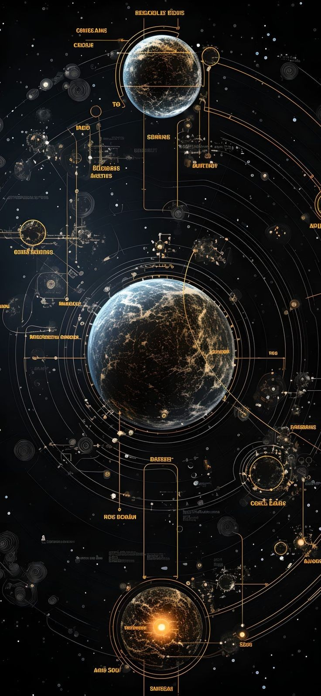

What I Like To Explore !!
I have a deep passion for astrophysics and all things related to space.
The mysteries of the universe captivate me, and I am fascinated by the complex phenomena
that govern celestial bodies and cosmic events. My interest extends beyond theoretical
concepts; I am particularly drawn to the mathematical applications that enable us to model
and understand these phenomena in real time. Exploring the intricate equations and algorithms that describe the motion of planets, the behavior of black holes, and the dynamics of galaxies fuels my curiosity. This combination of theoretical exploration and practical application allows me to
appreciate the beauty and complexity of the universe on both a scientific and mathematical level.

Astrophysics:
Cosmology: The study of the universe's origins, evolution, structure, and eventual fate, including the exploration of concepts like dark matter and dark energy.
Exoplanetary Science: Investigating planets outside our solar system, focusing on their atmospheres, compositions, and potential habitability.
Astroparticle Physics: The study of particles of cosmic origin, such as cosmic rays and neutrinos, and their interactions with matter and radiation
Mathematical Applications in Real Time:
Numerical Modeling: Using algorithms and computational methods to simulate and predict complex systems, such as climate models or fluid dynamics.
Data Analysis and Visualization: Applying statistical techniques and mathematical tools to analyze large datasets, particularly in fields like astrophysics and machine learning.
Control Theory: Developing mathematical models and algorithms to manage and control dynamic systems, with applications in robotics, aerospace, and engineering.